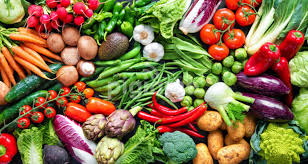
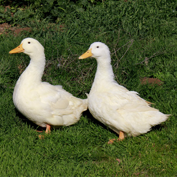
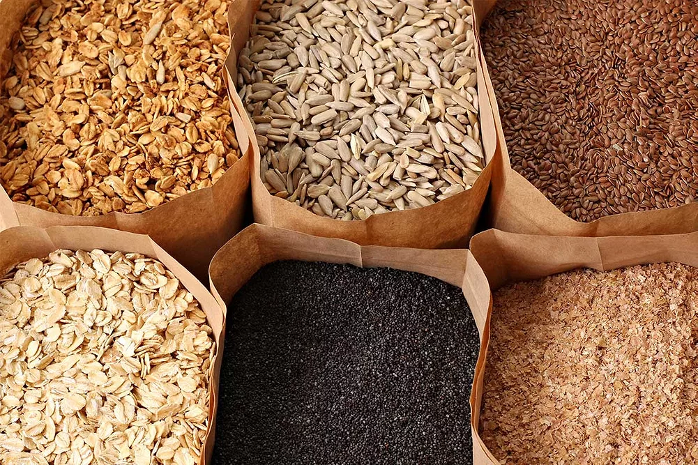

A Legacy of Honest Farming
To become the agribusiness you trust as an extension of your own hands — cultivating a future where you have reliable access to safe, health-conscious organic food grown with the exact care, environmental respect, and integrity you would give it yourself.
To provide you with dependable, traceable, and sustainably grown organic produce.
To restore the personal care, love, and uncompromising standards of nutritious home-grown food to the modern table.

How We Do It
We enrich our soil naturally using compost, manure, and cover crops — creating the perfect foundation for healthy plants.
Seeds are sown by hand and tended daily. We use companion planting and natural pest control to keep crops thriving.
We harvest at peak ripeness — never early for shelf life. What's picked today reaches you within 24 hours.
Packed with care and delivered fresh — no cold storage, no preservatives, no compromise on quality.
One Brand, Three Worlds
Everything we do is built around one idea — that products and services should be made exactly the way you want them. Meet the family.
Organic crops, free-range ducks and fresh produce grown with care, purpose and zero compromise on quality — straight from our farm to your table.
Custom websites, mobile apps and business software built exactly the way you need them — no templates, no one-size-fits-all, just technology shaped around your vision.
Bespoke fashion, handmade accessories and design pieces crafted to your exact taste — wearable art and handcrafted goods made for the individual, not the crowd.
Fresh produce, wholesale enquiries, or just a question — we're here.